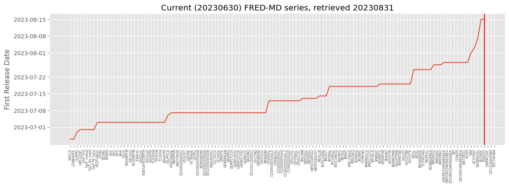

Economic Data Revisions#
UNDER CONSTRUCTION
St Louis Fed FRED: popular series, api
ALFRED: archival, releases, vintages, revisions
FRED-MD: release dates
https://journals.ala.org/index.php/dttp/article/view/6383/8404
import time
import numpy as np
import pandas as pd
from pandas import DataFrame, Series
import matplotlib.pyplot as plt
from finds.readers import Alfred, fred_md, fred_qd
from finds.misc import Show
from finds.plots import plot_date
from datetime import datetime
from secret import credentials, paths
show = Show(ndigits=4, latex=None)
VERBOSE = 0
# %matplotlib qt
imgdir = paths['images'] / 'ts'
today = int(datetime.today().strftime('%Y%m%d'))
alf = Alfred(api_key=credentials['fred']['api_key'],
savefile=imgdir / 'revisions.pkl',
verbose=VERBOSE)
Popular FRED series#
popular = {}
titles = Alfred.popular(1)
for title in titles:
series = alf.request_series(title) # requests 'series' FRED api
if not series.empty:
popular[title] = series.iloc[-1][['title', 'popularity']]
show(DataFrame.from_dict(popular, orient='index'),
caption=f"Popular Series in FRED, retrieved {today}")
| title | popularity | |
|---|---|---|
| Popular Series in FRED, retrieved 20230831 | ||
| T10Y2Y | 10-Year Treasury Constant Maturity Minus 2-Yea... | 100 |
| MORTGAGE30US | 30-Year Fixed Rate Mortgage Average in the Uni... | 100 |
| FEDFUNDS | Federal Funds Effective Rate | 98 |
| CPIAUCSL | Consumer Price Index for All Urban Consumers: ... | 95 |
| M2SL | M2 | 93 |
| WALCL | Assets: Total Assets: Total Assets (Less Elimi... | 95 |
| T10Y3M | 10-Year Treasury Constant Maturity Minus 3-Mon... | 95 |
| BAMLH0A0HYM2 | ICE BofA US High Yield Index Option-Adjusted S... | 94 |
| UNRATE | Unemployment Rate | 93 |
| GDP | Gross Domestic Product | 92 |
| CSUSHPINSA | S&P/Case-Shiller U.S. National Home Price Index | 91 |
| DGS10 | Market Yield on U.S. Treasury Securities at 10... | 92 |
| RRPONTSYD | Overnight Reverse Repurchase Agreements: Treas... | 92 |
| GDPC1 | Real Gross Domestic Product | 90 |
| MSPUS | Median Sales Price of Houses Sold for the Unit... | 91 |
| T10YIE | 10-Year Breakeven Inflation Rate | 90 |
| DFII10 | Market Yield on U.S. Treasury Securities at 10... | 87 |
fig, axes = plt.subplots(ncols=3, nrows=5, figsize=(10, 12), layout='constrained')
for cn, (ax, title) in enumerate(zip(np.ravel(axes), titles[:15])):
series = alf(title)
plot_date(series, ax=ax, title=title, xlabel=alf.header(title)[:30],
fontsize=6, ls='-', cn=cn, nbins=4)
plt.tight_layout()
/home/terence/Dropbox/github/data-science-notebooks/finds/plots.py:159: UserWarning: 'set_params()' not defined for locator of type <class 'pandas.plotting._matplotlib.converter.PandasAutoDateLocator'>
plt.locator_params(axis='x', nbins=nbins) # numeric ticks
/tmp/ipykernel_4096016/2958181288.py:6: UserWarning: The figure layout has changed to tight
plt.tight_layout()
# Traversing categories tree
node = 0
while True:
node = alf.get_category(node)
print(f"[{node['id']}]", node['name'],
f"(#children = {len(node['children'])})",
f"(#series = {len(node['series'])})")
if not (node['children']):
break
node = np.min([child['id'] for child in node['children']])
for i, row in enumerate(node['series']):
print(i, row['id'], row['title'])
https://api.stlouisfed.org/fred/category?category_id=0&api_key=eb428f329807459fa7bee89be4ebbc3b&file_type=json
https://api.stlouisfed.org/fred/category/children?category_id=0&api_key=eb428f329807459fa7bee89be4ebbc3b&file_type=json
https://api.stlouisfed.org/fred/category/series?category_id=0&api_key=eb428f329807459fa7bee89be4ebbc3b&file_type=json&offset=0
[0] Categories (#children = 8) (#series = 0)
https://api.stlouisfed.org/fred/category?category_id=1&api_key=eb428f329807459fa7bee89be4ebbc3b&file_type=json
https://api.stlouisfed.org/fred/category/children?category_id=1&api_key=eb428f329807459fa7bee89be4ebbc3b&file_type=json
https://api.stlouisfed.org/fred/category/series?category_id=1&api_key=eb428f329807459fa7bee89be4ebbc3b&file_type=json&offset=0
https://api.stlouisfed.org/fred/category/series?category_id=1&api_key=eb428f329807459fa7bee89be4ebbc3b&file_type=json&offset=1000
https://api.stlouisfed.org/fred/category/series?category_id=1&api_key=eb428f329807459fa7bee89be4ebbc3b&file_type=json&offset=2000
https://api.stlouisfed.org/fred/category/series?category_id=1&api_key=eb428f329807459fa7bee89be4ebbc3b&file_type=json&offset=3000
https://api.stlouisfed.org/fred/category/series?category_id=1&api_key=eb428f329807459fa7bee89be4ebbc3b&file_type=json&offset=4000
[1] Production & Business Activity (#children = 16) (#series = 3274)
https://api.stlouisfed.org/fred/category?category_id=3&api_key=eb428f329807459fa7bee89be4ebbc3b&file_type=json
https://api.stlouisfed.org/fred/category/children?category_id=3&api_key=eb428f329807459fa7bee89be4ebbc3b&file_type=json
https://api.stlouisfed.org/fred/category/series?category_id=3&api_key=eb428f329807459fa7bee89be4ebbc3b&file_type=json&offset=0
https://api.stlouisfed.org/fred/category/series?category_id=3&api_key=eb428f329807459fa7bee89be4ebbc3b&file_type=json&offset=1000
https://api.stlouisfed.org/fred/category/series?category_id=3&api_key=eb428f329807459fa7bee89be4ebbc3b&file_type=json&offset=2000
https://api.stlouisfed.org/fred/category/series?category_id=3&api_key=eb428f329807459fa7bee89be4ebbc3b&file_type=json&offset=3000
[3] Industrial Production & Capacity Utilization (#children = 1) (#series = 2624)
https://api.stlouisfed.org/fred/category?category_id=33938&api_key=eb428f329807459fa7bee89be4ebbc3b&file_type=json
https://api.stlouisfed.org/fred/category/children?category_id=33938&api_key=eb428f329807459fa7bee89be4ebbc3b&file_type=json
https://api.stlouisfed.org/fred/category/series?category_id=33938&api_key=eb428f329807459fa7bee89be4ebbc3b&file_type=json&offset=0
https://api.stlouisfed.org/fred/category/series?category_id=33938&api_key=eb428f329807459fa7bee89be4ebbc3b&file_type=json&offset=1000
[33938] Automotive Production Seasonal Factor (#children = 0) (#series = 7)
0 G17MVSFAUTOS Regular Seasonal Factors: Auto Production
1 G17MVSFLTRUCKS Regular Seasonal Factors: Light Truck Production
2 G17MVSFTTRUCKS Regular Seasonal Factors: Total Truck Production
3 G17MVSFWAUTOS Weekday-Basis Seasonal Factors: Auto Production
4 G17MVSFWLTRUCKS Weekday-Basis Seasonal Factors: Light Truck Production
5 G17MVSFWTTRUCKS Weekday-Basis Seasonal Factors: Total Truck Production
6 G17MVSFWWKDAYS Weekday-Basis Seasonal Factors: Weekdays for Calculation
https://alfred.stlouisfed.org/graph/?graph_id=354151
# INDPRO by latest, vintage, revision number, time lag
series_id, freq = 'INDPRO', 'M' # https://www.bea.gov/gdp-revision-information
#series_id = 'CPIAUCSL'
series_id, freq = 'GDPC1', 'Q'
print(f"Latest revision retrieved {today}:")
print(alf(series_id,
start=20200401,
end=20200731,
freq=freq,
realtime=True))
Latest revision retrieved 20230831:
GDPC1 realtime_start realtime_end
date
20200630 17378.712 20220929 99991231
print("First Release:")
print(alf(series_id,
release=1,
start=20200401,
end=20200731,
freq=freq,
realtime=True))
First Release:
GDPC1 realtime_start realtime_end
date
20200630 17205.822 20200730 20200826
print("Second Release:")
print(alf(series_id,
release=2,
start=20200401,
end=20200731,
freq=freq,
realtime=True))
Second Release:
GDPC1 realtime_start realtime_end
date
20200630 17282.188 20200827 20200929
print("Revised Up to 5-months Later:")
print(alf(series_id,
release=pd.DateOffset(months=5),
start=20200401,
end=20200731,
freq=freq,
realtime=True))
Revised Up to 5-months Later:
GDPC1 realtime_start realtime_end
date
20200630 17302.511 20200930 20210728
print("Latest as of Vintage date 2020-06-30:")
print(alf(series_id,
vintage=20200630,
realtime=True,
freq=freq,
start=20200401))
Latest as of Vintage date 2020-06-30:
Empty DataFrame
Columns: [GDPC1, realtime_start, realtime_end]
Index: []
# revisions history up to N-months later
df = pd.concat([alf(series_id,
start=today - 60000,
freq=freq,
release=pd.DateOffset(months=m))\
.rename(f"Revised up to {m}-months later")
for m in [1, 3, 9, 21, 33]], axis=1)
df.index = pd.DatetimeIndex(df.index.astype(str))
ax = df.plot(logy=False)
ax.set_title(f"{series_id}: Revisions up to N-months later")
if imgdir:
plt.savefig(imgdir / 'release_months.jpg')
print(df)
Revised up to 1-months later Revised up to 3-months later
date
2017-09-30 17156.946 17163.894 \
2017-12-31 17272.468 17286.497
2018-03-31 17385.831 17371.854
2018-06-30 18507.200 18511.576
2018-09-30 18671.497 18664.973
2019-03-31 18912.326 18910.332
2019-06-30 19023.820 19021.860
2019-09-30 19112.542 19121.112
2019-12-31 19219.767 19221.970
2020-03-31 18987.877 18977.363
2020-06-30 17205.822 17302.511
2020-09-30 18583.984 18596.521
2020-12-31 18780.325 18794.426
2021-03-31 19087.568 19086.375
2021-06-30 19358.176 19368.310
2021-09-30 19465.195 19478.893
2021-12-31 19805.962 19806.290
2022-03-31 19735.895 19727.918
2022-06-30 19681.682 19895.271
2022-09-30 20021.721 20054.663
2022-12-31 20198.091 20182.491
2023-03-31 20235.878 20282.760
2023-06-30 20404.088 20386.467
2018-12-31 NaN 18765.256
Revised up to 9-months later Revised up to 21-months later
date
2017-09-30 17163.894 18120.843 \
2017-12-31 18223.758 18322.464
2018-03-31 18323.963 18438.254
2018-06-30 18511.576 18598.135
2018-09-30 18664.973 18732.720
2019-03-31 18927.281 18950.347
2019-06-30 19021.860 19020.599
2019-09-30 19121.112 19141.744
2019-12-31 19253.959 19202.310
2020-03-31 19010.848 18951.992
2020-06-30 17302.511 17258.205
2020-09-30 18596.521 18560.774
2020-12-31 18767.778 18924.262
2021-03-31 19055.655 19216.224
2021-06-30 19368.310 19544.248
2021-09-30 19478.893 19672.594
2021-12-31 20006.181 20006.181
2022-03-31 19924.088 19924.088
2022-06-30 19895.271 19895.271
2022-09-30 20054.663 20054.663
2022-12-31 20182.491 20182.491
2023-03-31 20282.760 20282.760
2023-06-30 20386.467 20386.467
2018-12-31 18783.548 18813.923
Revised up to 33-months later
date
2017-09-30 18163.558
2017-12-31 18359.432
2018-03-31 18530.483
2018-06-30 18654.383
2018-09-30 18752.355
2019-03-31 18833.195
2019-06-30 18982.528
2019-09-30 19112.653
2019-12-31 19215.691
2020-03-31 18989.877
2020-06-30 17378.712
2020-09-30 18743.720
2020-12-31 18924.262
2021-03-31 19216.224
2021-06-30 19544.248
2021-09-30 19672.594
2021-12-31 20006.181
2022-03-31 19924.088
2022-06-30 19895.271
2022-09-30 20054.663
2022-12-31 20182.491
2023-03-31 20282.760
2023-06-30 20386.467
2018-12-31 18721.281
# revisions history by revision number
df = pd.concat([alf(series_id,
start=today - 60000,
freq=freq,
release=n).rename(f"release {n}")
for n in range(1, 9)], axis=1)
#df.index = pd.DatetimeIndex(df.index.astype(str))
plot_date(df, title=f"Revisions of {series_id} by release number")
if imgdir:
plt.savefig(imgdir / 'release_revisions.jpg')
show(df, caption=f"{series_id} Revisions, retrieved {today}")
| release 1 | release 2 | release 3 | release 4 | release 5 | release 6 | release 7 | release 8 | |
|---|---|---|---|---|---|---|---|---|
| GDPC1 Revisions, retrieved 20230831 | ||||||||
| 20170930 | 17156.946 | 17169.733 | 17163.894 | 18120.843 | 18163.558 | 18185.636 | 18126.226 | 18127.994 |
| 20171231 | 17272.468 | 17271.702 | 17286.497 | 18223.758 | 18322.464 | 18359.432 | 18296.685 | 18310.300 |
| 20180331 | 17385.831 | 17379.728 | 17371.854 | 18323.963 | 18438.254 | 18530.483 | 18436.262 | 18437.127 |
| 20180630 | 18507.200 | 18514.595 | 18511.576 | 18598.135 | 18654.383 | 18590.004 | 18565.697 | NaN |
| 20180930 | 18671.497 | 18671.650 | 18664.973 | 18732.720 | 18752.355 | 18679.599 | 18699.748 | NaN |
| 20181231 | 18784.632 | 18765.256 | 18783.548 | 18813.923 | 18721.281 | 18733.741 | NaN | NaN |
| 20190331 | 18912.326 | 18907.517 | 18910.332 | 18927.281 | 18950.347 | 18833.195 | 18835.411 | NaN |
| 20190630 | 19023.820 | 19023.022 | 19021.860 | 19020.599 | 18982.528 | 18962.175 | NaN | NaN |
| 20190930 | 19112.542 | 19122.060 | 19121.112 | 19141.744 | 19112.653 | 19130.932 | NaN | NaN |
| 20191231 | 19219.767 | 19220.490 | 19221.970 | 19253.959 | 19202.310 | 19215.691 | NaN | NaN |
| 20200331 | 18987.877 | 18974.702 | 18977.363 | 19010.848 | 18951.992 | 18989.877 | NaN | NaN |
| 20200630 | 17205.822 | 17282.188 | 17302.511 | 17258.205 | 17378.712 | NaN | NaN | NaN |
| 20200930 | 18583.984 | 18583.501 | 18596.521 | 18560.774 | 18743.720 | NaN | NaN | NaN |
| 20201231 | 18780.325 | 18783.902 | 18794.426 | 18767.778 | 18924.262 | NaN | NaN | NaN |
| 20210331 | 19087.568 | 19088.064 | 19086.375 | 19055.655 | 19216.224 | NaN | NaN | NaN |
| 20210630 | 19358.176 | 19360.600 | 19368.310 | 19544.248 | NaN | NaN | NaN | NaN |
| 20210930 | 19465.195 | 19469.398 | 19478.893 | 19672.594 | NaN | NaN | NaN | NaN |
| 20211231 | 19805.962 | 19810.572 | 19806.290 | 20006.181 | NaN | NaN | NaN | NaN |
| 20220331 | 19735.895 | 19731.119 | 19727.918 | 19924.088 | NaN | NaN | NaN | NaN |
| 20220630 | 19681.682 | 19699.465 | 19895.271 | NaN | NaN | NaN | NaN | NaN |
| 20220930 | 20021.721 | 20039.406 | 20054.663 | NaN | NaN | NaN | NaN | NaN |
| 20221231 | 20198.091 | 20187.495 | 20182.491 | NaN | NaN | NaN | NaN | NaN |
| 20230331 | 20235.878 | 20246.439 | 20282.760 | NaN | NaN | NaN | NaN | NaN |
| 20230630 | 20404.088 | 20386.467 | NaN | NaN | NaN | NaN | NaN | NaN |
show(alf.observations(series_id, date=today - 60000, freq='Q'))
| realtime_start | realtime_end | date | value | |
|---|---|---|---|---|
| release | ||||
| 1 | 2017-10-27 | 2017-11-28 | 20170930 | 17156.946 |
| 2 | 2017-11-29 | 2017-12-20 | 20170930 | 17169.733 |
| 3 | 2017-12-21 | 2018-07-26 | 20170930 | 17163.894 |
| 4 | 2018-07-27 | 2019-07-25 | 20170930 | 18120.843 |
| 5 | 2019-07-26 | 2020-07-29 | 20170930 | 18163.558 |
| 6 | 2020-07-30 | 2021-07-28 | 20170930 | 18185.636 |
| 7 | 2021-07-29 | 2022-09-28 | 20170930 | 18126.226 |
| 8 | 2022-09-29 | 9999-12-31 | 20170930 | 18127.994 |
# Release dates of series in FRED-MD collection
md_df, md_transform = fred_md()
end = md_df.index[-1]
out = {}
for i, title in enumerate(md_df.columns):
out[title] = alf(series_id=title,
release=1,
start=end-4, # within 4 days of monthend
end=end,
realtime=True)
if title.startswith('S&P'): # stock market data available same day close
out[title] = Series({end: end}, name='realtime_start').to_frame()
elif title in alf.splice_:
if isinstance(Alfred.splice_[title], str):
out[title] = alf(series_id=Alfred.splice_[title],
release=1,
start=end-4, # within 4 days of monthend
end=end,
realtime=True)
else: # if FRED-MD series was spliced
out[title] = pd.concat([alf(series_id=sub,
reglease=1,
start=end-4, # within 4 days of monthend
end=end,
realtime=True)
for sub in Alfred.splice_[title][1:]])
# special case of Consumer Sentiment (date convention)
df = alf('UMCSENT', release=1, realtime=True)
out['UMCSENT'] = df[df['realtime_start'] > end - 4].iloc[:1]
# special case of Claims (weekly averages)
df = alf('ICNSA', release=1, realtime=True)
out['CLAIMS'] = df[df['realtime_start'] > end - 4].iloc[:1]
monthly/current.csv
# Plot for a representative monthly cross-section
#release = Series({k: max(v['realtime_start'])
# for k,v in out.items() if v is not None and len(v)})\
# .sort_values()
release = Series({k: str(min(v['realtime_start'])) if v is not None and len(v)
else None
for k,v in out.items()}).sort_values()
fig, ax = plt.subplots(clear=True, num=1, figsize=(13, 5))
ax.plot(pd.to_datetime(release, errors='coerce'))
ax.axvline(release[~release.isnull()].index[-1], c='r')
ax.set_title(f"Current ({end}) FRED-MD series, retrieved {today}")
ax.set_ylabel('First Release Date')
ax.set_xticks(np.arange(len(release)))
ax.set_xticklabels(release.index, rotation=90, fontsize='xx-small')
plt.tight_layout(pad=2)
if imgdir:
plt.savefig(imgdir / 'fredmd_release.jpg')

md_missing = md_df.iloc[-1]
md_missing = md_missing[md_missing.isnull()]
print("Recent values available to update missing in current FRED-MD")
for series_id in md_missing.index:
show(alf.splice(series_id).iloc[-3:])
Recent values available to update missing in current FRED-MD
Series(release.values,
index=[(s, alf.header(s))
for s in release.index]).tail(len(md_missing))
(CONSPI, Nonrevolving consumer credit to Personal Income) 20230728
(DPCERA3M086SBEA, Real personal consumption expenditures (chain-type quantity index)) 20230728
(W875RX1, Real personal income excluding current transfer receipts) 20230728
(PCEPI, Personal Consumption Expenditures: Chain-type Price Index) 20230728
(HWI, Help Wanted Index for United States) 20230801
(ACOGNO, Manufacturers' New Orders: Consumer Goods) 20230803
(NONREVSL, Nonrevolving Consumer Credit Owned and Securitized) 20230807
(BUSINV, Total Business Inventories) 20230815
(ISRATIO, Total Business: Inventories to Sales Ratio) 20230815
(CMRMTSPL, Real Manufacturing and Trade Industries Sales) None
(DTCOLNVHFNM, Consumer Motor Vehicle Loans Owned by Finance Companies, Level) None
(DTCTHFNM, Total Consumer Loans and Leases Owned and Securitized by Finance Companies, Level) None
dtype: object